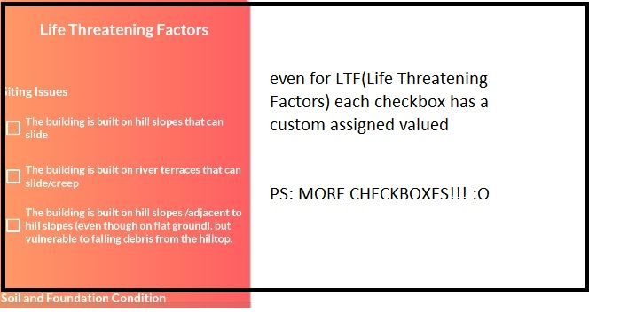

Getting Started
The EDRI Application has been created using Android Studio & Java. To run the application in your Android Studio follow the steps below.
To access the GitHub repository for the EDRI application, you'll be needing private access, request for permission by writing a mail to siddharth.pilli@inai.iiit.ac.in or bhaskar.kuntimalla@ihub-data.iiit.ac.in
Installation
Small Description
Windows
Fork and clone the github repository.
Mac OS
Fork and clone the github repository.
Linux
Fork and clone the github repository.
Configuration
Once you have cloned the repository you can open the project in Android Studio. Goto File > Open > Select The cloned Repository
Run the App
To run the Android Application, you can select your emulator either a real phone or an emulator and run the application.
App - File Directory
The file directory of application consists of the root main folder, with two directories in it, example.myapplication9 and memorynotfound.pdf.itext. example.myapplication9 is the main directory in the app.
Inside example.myapplication9 there are 4 activities MainActivity, LoginActivity, RegistrationActivity, and HeaderFooterPageEvent
Usage & Features
We will not explore the various usage and features of the application.
The entierty of the application is an complete form, where based on the features you select it evaluates a risk value for your structure. The evaluation has been divided into 4 subsets Hazard, Ground Shaking, Exposure, and Vulnerability.
Hazard
The first section of the form starts with Hazard. In the Hazard section it consists of single dropdown called Collateral Damage, this dropdown has 4 options which are Liquefaction, Rockfall, Landslide, and Fire. This dropdown is useful for understanding if there is any sort Collateral Damage near or at the structure.
Ground Shaking
In Ground Shaking the user needs to provide various information about the structure for further evaluation. Few of those inputs are Zone factor(Zone factors are given on the basis of expected intensity of the earthquake in different zones.), Soil Type(The type of soil at the structure), Storeys of the structure(Number of Storeys in the Structure), and finally photos of the structure at various angles. This data is going to be calculated on a scale with each selection resulting in a increase ir a decrease in Vulnerability.
Exposure
In Exposure user needs to provide information the Type of Structure, and The Floor Space Index(FSI) or Floor Area Ration(FAR). There is a catch with the whole concept of FSI because few regions have sort of an FSI dilemma 🤔. Basically the FSI in Hyderabad is 1 but somewhere like Bangalore FSI is 1.75. So keeping this is mind there is FSI and FSI Allowable, based on the allowable value the actual can be nomralized.
Vulnerability - Economic Loss Inducing Factors
Earthquake vulnerability of a building is the amount of expected damage induced to it by the expected intensity of earthquake shaking. It can be quantified in terms of Life Threatening Factors (LTF) and Economic Loss Inducing Factors (ELIF).
The ELIF calculation uses every input as a checkbox, and each checkbox contains a certian value and entirety of ELIF can be quantified as the algebraic sum of: (i) siting issues (5%), (ii) soil & foundation conditions (5%), (iii) architecture features (50%), (iv) structural aspects (20%), and (v) construction details (20%). The above percentage varies with building type, and over time upon gaining experience of risk assessment.
Vulnerability - Life Threatening Factors
Two types of lifethreatening factors are considered, namely (i) those related to the structure of the house, and (ii) those related to the contents and utilities of the house; hereinafter, these two sets of factors are referred to as Life Threatening House Structure Factors L(S) and Life Threatening House Contents & Utilities Factors L(C). Life threatening factors can be quantified in terms of: (i) site, (ii) form, and (iii) strength. If any of these factors are present in the buildings, then that building is declared as one with as 100% risk.
Submitting Result - PDF
Once everything's filled, all the input including Dropdowns, Text Input, Checkboxes, and etc-; we can click the submit button if we left anything out the app will ask us to fill that specific input 😉. But if we filled everything and click on submit the application will create a PDF file which contains the EDRI value of the structure, below submit we have the "OPEN FILE" button when we click on it, it will take us to the PDF document. Below is the snapshot of how the PDF looks lile.
Understanding - EDRI Calculation
The calculation of EDRI looks a bit complicated but in reality the algorithm is neat and understandable, it's basically pthe product of Hazard, Exposure, and Vulnerability. The below diagram might help you Understand the Algoritm better.
Issues
If you have any issue please raise a PR in github EDRI_APP